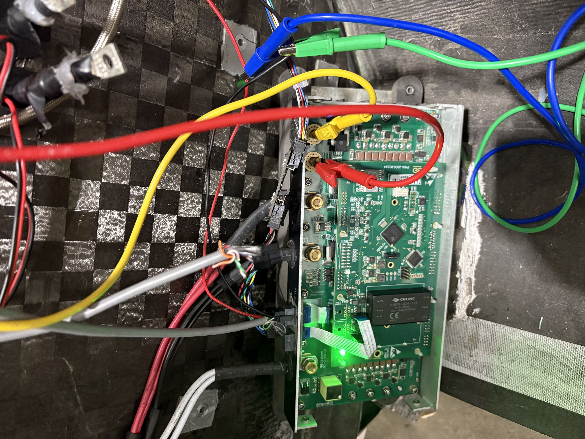
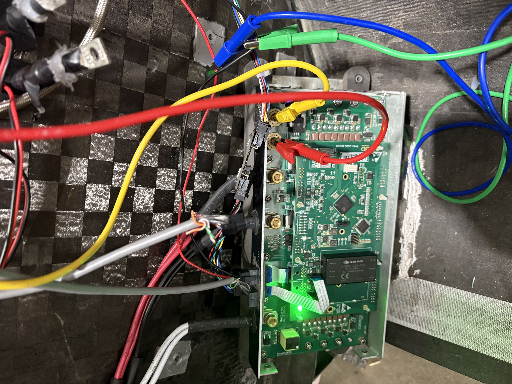
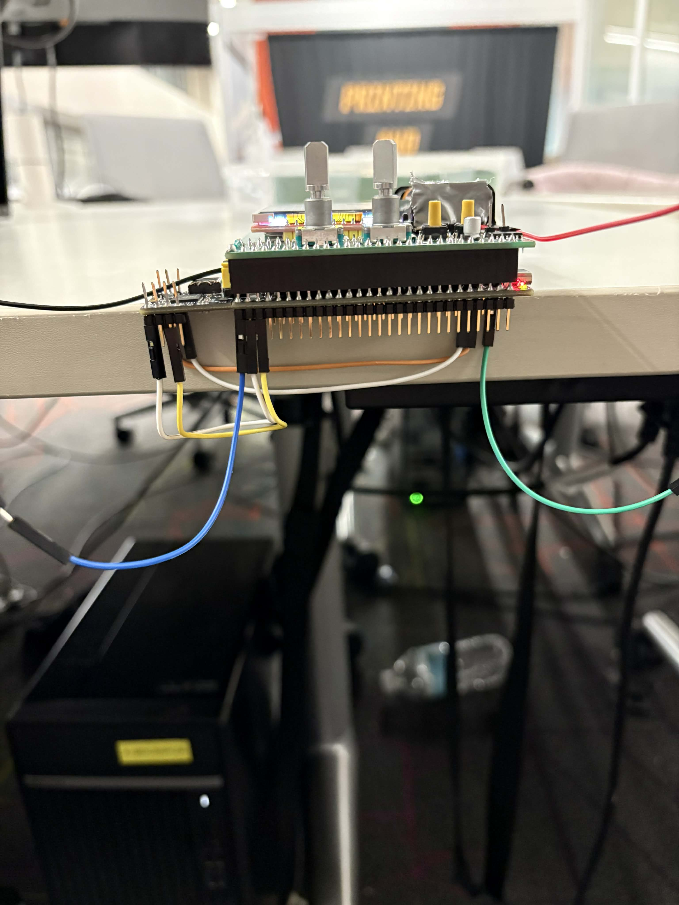
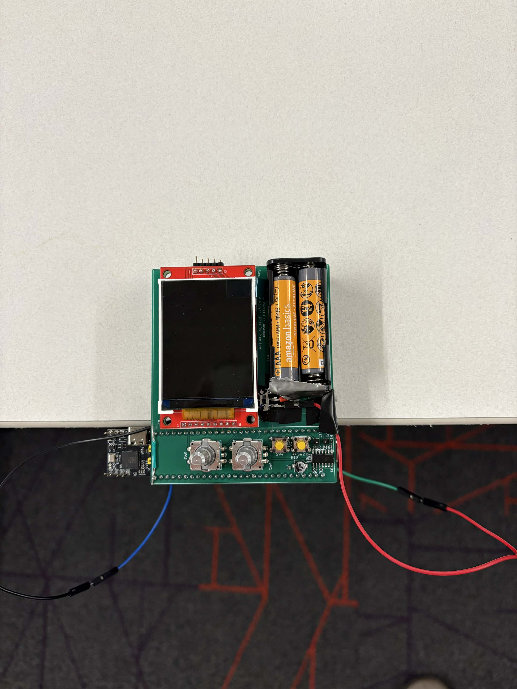
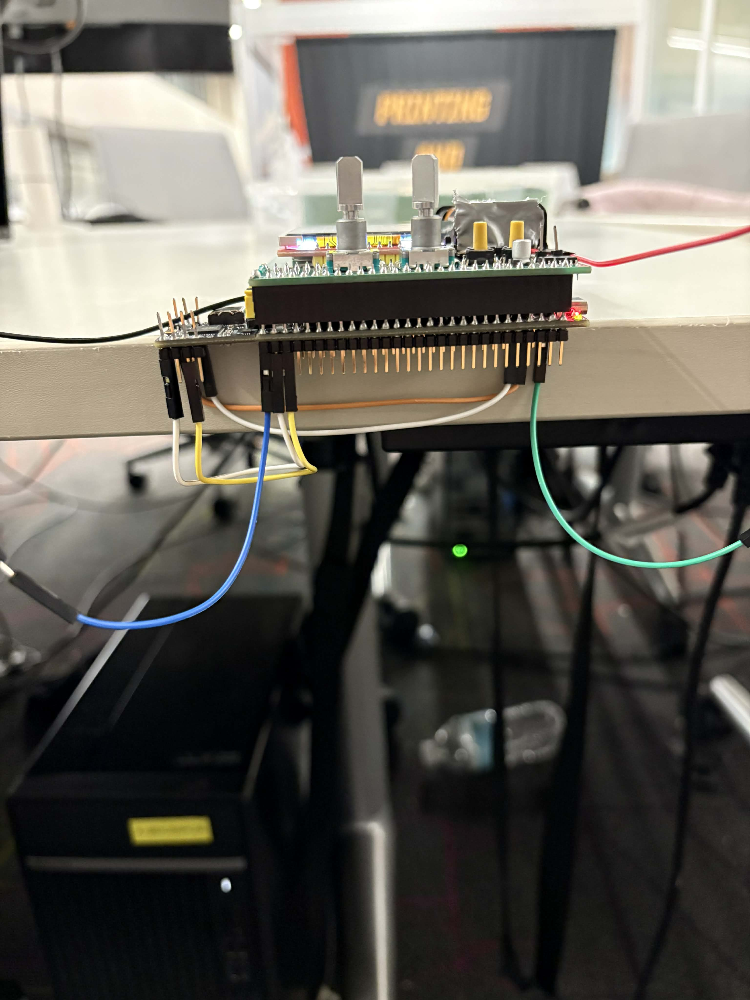
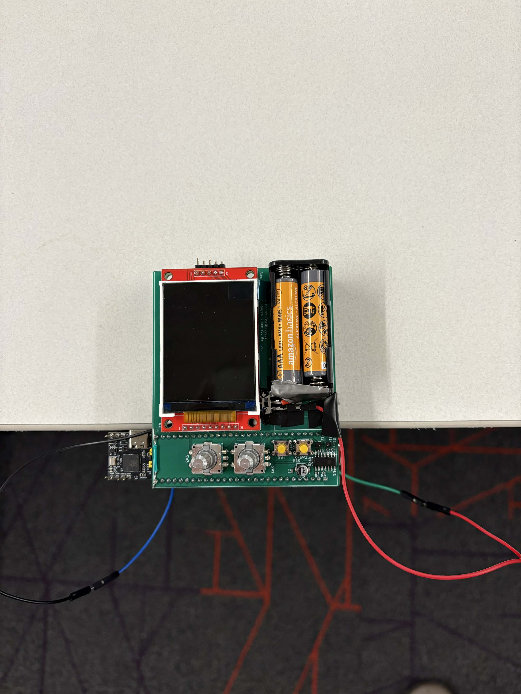

A documentation of my knowledge from PSR for future reference.


 

One of my first projects as a member is designing
the nickel sheets for the new battery configuration.
By changing the configuration from 29s10p to 36s8p,
not only that we made the module symmetrical (saving space and weight on the car),
we also increased the total pack voltage by 23% (allowing more torque in the motor).
One of my first projects as a lead was to configure the new motor controller.
This is not the most technical project, but it forced me to learn more about the motor,
and its power consumption, which eventually explains a lot when it comes to current ratings of our system.


I created a standard of operation to test Mikro's combined overcurrent and earth fault relay after engaging with the R&D testing technicians. To learned about the importance of the accuracy in "immediate" tripping time as well as high current saturation testing to make sure that the relay will effectively isolate before breaking due to extreme overcurrent cases.
I created a power supply PCB with a given schematic using Altium. The board was for a voltage relay. Therefore, I had to adhere to all EMC rules regarding high-voltage spacing and how to effectively space things out to save on area.
I learned about active harmonic filter, how and why it is used in constructions in place of passive filters. I also learned how to size capacitor bank for a system as well. However, I did not have enough time to actually implement these into a running porject.

Project Objectives
- Ultilize Piezo Electrical energy to detect room entry
Project Description: Implementing piezoelectric to create a zero-power sensor that can be activated by a voltage surge signal every single time a person steps on it.
Reflection: The project's original scope was to harvest energy generated by this technology to charge phones, batteries,...However, with the effeciency of under 10% and low power (in the miliWatt range) generated due to low current, most of that power was lost before we could use it. Therefore, the project scope was narrowed to a zero-power sensor which is a lot more doable while still maintaining practicality.


 




Project Objectives
- An ability to use SPI to display on the OLED display
- An ability to use ADC to capture the analog wave
- An ability to use PWM to implement a waveform generator to generate 0V to 5V DC waves
- An ability to use GPIO to adjust the time base and voltage scale of the oscilloscope
Project Description: A portable oscilloscope (with PCB and independent power supply) designed for ease of transport and quick troubleshooting. It can measure the voltage up to 30V, ranging from -15V to +15V. Furthermore, it shows waveforms at the frequency of 1kHz and can take functions with up to 500kbs sample rate, making it ideal for audio, sensor, and low-frequency digital uses. My contributions: coded SPI for displaying ADC input, implemented interrupts for the buttons and rotary encoders, designed the PCB
Reflection: in progress...